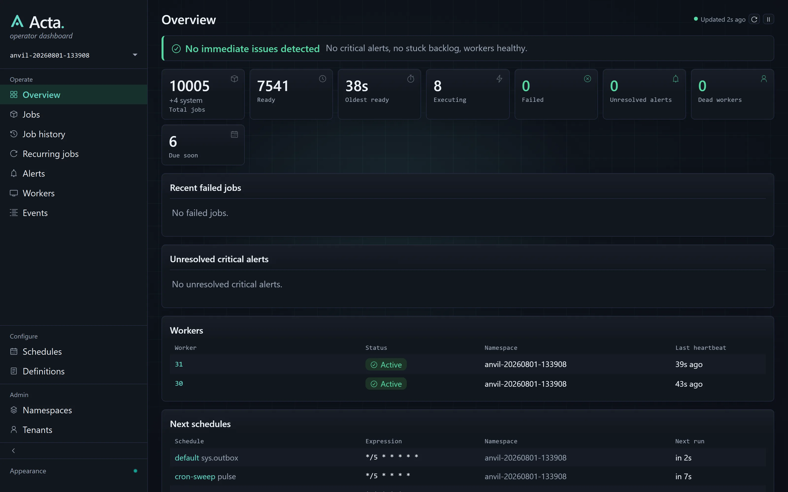
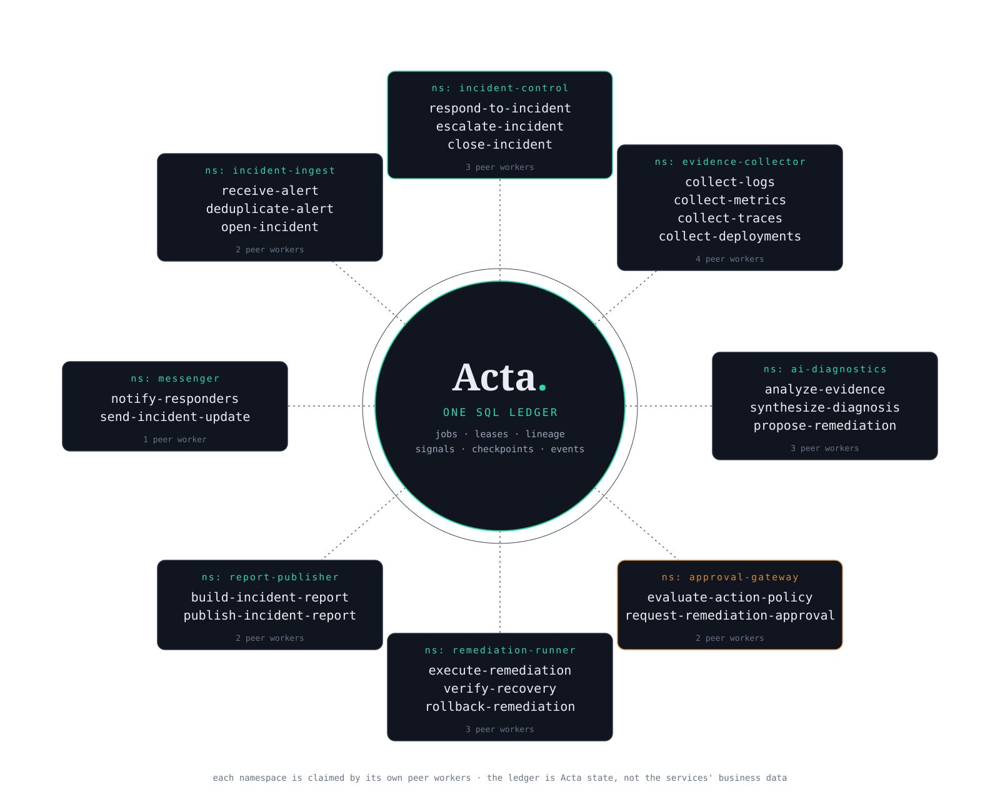

open source · postgres · sql server · sqlite
Acta.: the durable work ledger for .NET
acta, n. pl. · Latin: the things that have been done; the official record of proceedings.
The durable work ledger for .NET.
A background-jobs library where every job lives in the Postgres, SQL Server, or SQLite you already run: enqueue, schedule, retry, durable waits, fan-out, with recovery, a dashboard, and a CLI built in.
Because production happens: workers die holding work, retries repeat side effects, jobs get "stuck" and nobody can say why. Acta makes every job, attempt, lease, and retry durable SQL state you can see, query, and act on: no broker, no sidecar, no workflow SaaS.
The code
A durable job in a dozen lines.
The [Job] name is the durable, operator-facing contract; enqueue is typed, dispatch is source-generated. And the state it creates isn't hidden in a broker or a SaaS console: it's rows you SELECT.
public sealed record DeliverWebhook(Guid DeliveryId, Uri Endpoint, string Payload);
public sealed class WebhookJob(IWebhookSender sender)
{
[Job("deliver-webhook")]
public Task Handle(DeliverWebhook input, CancellationToken ct) =>
sender.SendAsync(input.Endpoint, input.Payload,
idempotencyKey: input.DeliveryId.ToString(), ct);
}
// enqueue from anywhere in the host
await jobs.EnqueueAsync(new DeliverWebhook(
Guid.CreateVersion7(),
new Uri("https://partner.example.com/hooks/orders"),
"""{"orderId":"ORD-1042","status":"shipped"}"""), ct: ct);-- In-flight work and who holds it.
select job_id, job_name, status,
leased_by_worker_host,
lease_expires_at_utc
from acta.jobs_view
where status in ('dispatched', 'executing');Jobs, attempts, leases, events, schedules, checkpoints, workers, alerts: all rows, with curated operator views. A job that failed a month ago is still there to inspect, and to restart with its original input.
How it runs
A dead worker's lease expires; any peer reclaims the job and continues from recorded state. Optional Redis only rings the bell so idle workers wake sooner: SQL remains the only durable truth.
Run it
Acta est. Now run it yourself.
Fresh clone to a running durable job on embedded SQLite: then point the same code at Postgres or SQL Server when it matters. Apache-2.0: the runtime, dashboard, CLI, and all SQL providers are free.
$ git clone https://github.com/acta-dotnet/acta && cd acta
$ dotnet run --project concepts/000-fundamentals/001-hello-acta
Enqueued. The worker is running - press Ctrl+C to stop.
Hello, World!
# press Ctrl+C, then:
$ dotnet run --project anvil/Anvil
Anvil : http://127.0.0.1:5059/Capabilities · quick reference
The core inventory, in five columns.
The one-line version of everything Acta does. Each item is expanded, with the API that does it, in the full reference below.
Jobs & scheduling
- Fire-and-forget · delayed · recurring under one model
- Durable retries with typed backoff: policy, not folklore
- Persistent schedule cursors: missed windows explicit; one stable job row
- Deduplication keys stop blind repeats at enqueue
- Atomic enqueue with your data: one transaction, or the external outbox
Execution primitives
- Named durable steps: recorded outcomes return on re-entry
AtMostOnce(): record intent before invocation; reconcile an interruption- Durable sleeps & signals: wait days, hold no thread
- Checkpoint slots: resume with intermediate results
- Child jobs: fan-out / fan-in, lineage
- Exclusive keys & locks
Failure & recovery
- Leases with automatic lapse: leaderless reclaim & retry
- Survives crashes, deployments, restarts
- Explain: a job tells you why, and what next
- Restart month-old failures with original input
- Failure alerts: queryable rows
Visibility & ops
- Everything SQL-visible: with curated operator views
- Append-only event ledger per job
- Embedded dashboard: an operational tool
- CLI in every host: incl.
jobs debugunder a breakpoint - Opt-in controls: pause, cancel, restart, signal
- Namespaces & tenants: who runs the work, who it is about
Engineering quality
- pg · mssql · sqlite: one operational model
- Generated dispatch, NativeAOT, no reflection
- 1 SQL round-trip per state change
- Deterministic test host: real-DB tests in tens of ms
- Typed contracts:
[Job]is the durable name - Redis as a bell only; JSON / MessagePack / gzip codecs
- Anvil lab: a million jobs, kill workers, watch recovery
How it compares
You know these tools. Here is the difference.
The dashboard
See exactly what your jobs are doing.
The embedded dashboard reads the same durable rows you can query yourself (backlog, failures, dead workers with heartbeats, next schedules) and says what needs action. It ships inside your app as a library, local-only by default, with mutating verbs off until you enable them.

Numbers & boundaries
Measured, not promised.
One rig (32 logical cores, NVMe), one warmup, median of three runs, engine 0.1.1-preview, for regression tracking and rough sizing, not capacity claims.
- No deterministic replay, checkpoints instead; completed slots don't re-run.
- No BPMN, no visual designer, no message bus, no hosted control plane.
- At-least-once execution, recorded step outcomes are repeat-safe; external effects still need idempotency or reconciliation.
AtMostOnce()trades possible duplication for an explicitly ambiguous outcome. - Not for every job: disposable local loops belong in
BackgroundServiceor cron.
Capabilities · in full
Every capability, in plain terms.
The quick reference above, expanded: what each piece does, how it behaves when things fail, and the API that does it.
Jobs & scheduling
- Fire-and-forget jobs
- Mark a method with
[Job("name")]and callEnqueueAsync(input). Enqueue is typed, dispatch is source-generated from your project manifest, and the job name is the durable, operator-facing contract. The host that enqueues can also execute: no separate worker process to deploy unless you want one. - Delayed jobs
- Enqueue with a not-before time. The job is durable, SQL-visible state from the moment of enqueue and is dispatched when due: surviving any restarts in between.
- Recurring schedules
[JobSchedule]with an interval (5m) or cron expression. One stable slot job carries moving schedule cursors instead of creating a job row per firing. Missed windows are visible and handled by explicit misfire policy, and schedules can be paused and resumed by operators.- Deduplication keys
- Enqueue with a caller-supplied key and a duplicate enqueue is refused instead of creating a second job: resubmitting the same form doesn't send the same email twice.
- Retries with typed backoff
- Retry count and backoff are explicit, typed policy on the job, not folklore in a catch block. Every attempt is recorded, so "how many times did this run and when" is a query.
- Atomic enqueue with your data
- Enqueue on the transaction you already opened, so the job and the business write commit or roll back together in the same database. When the job belongs to a different database, stage the handoff in your own transaction with
AddToActaOutboxAsyncand the built-insys.outboxrelay moves it into the ledger, deduplicating and quarantining as it goes. Neither is a universal exactly-once guarantee: the guide states exactly what each one buys.
Durable execution
- Durable steps
- Wrap work in a named durable step. The outcome is recorded in the database; when the handler re-enters after a crash, retry, or suspend, a completed step returns its stored result. External side effects still need idempotency because a process can die after the effect but before its outcome is recorded. Checkpoints, not replay: no determinism rules on your code.
- At-most-once steps ·
AtMostOnce() - For side effects where a duplicate is worse than an ambiguous interruption. If the process dies after Acta records the start, the body is not invoked again; it may have run zero or one times, and the handler must reconcile deliberately.
- Checkpoint slots
- Save intermediate values mid-handler and read them back after a crash or restart: resume long work where it left off, with the evidence in a row.
- Durable sleep
- Sleep for minutes or days without occupying a worker thread. The job leaves the worker, the timer is durable state, and the job is re-dispatched when it fires: surviving deploys in between.
- Signals
- A job can suspend until a named signal arrives: a webhook, an approval, another job finishing. Deliver the signal from anywhere: code, CLI, or dashboard. No worker is held while waiting.
- Child jobs, fan-out / fan-in
- Spawn jobs from a handler; parent lineage is recorded, so a batch that fans out into a thousand items stays traceable, and the parent can wait on the children's results.
- Exclusive keys & locks
- Serialize work that shares a key (one settlement run per account at a time) without blocking workers on unrelated jobs.
- Job results
- Return a value from a handler and fetch it later by job reference: the result is durable state like everything else.
Failure & recovery
- Worker leases & heartbeats
- A claimed job carries a lease held by a live, heartbeating worker. Kill the process: the lease lapses on its own. You can watch it happen in the workers table.
- Leaderless recovery
- Any surviving worker reclaims lapsed jobs and retries them. There is no coordinator, no leader election, no recovery service to run: recovery is itself ordinary durable work.
- Explain
- Ask any job why it is in its current state and what happens next. The answer comes from its recorded rows, not from log archaeology.
- Restart with original input
- A job that failed a month ago is still a row, with its input. Restart it as-is: no re-constructing the payload from logs.
- Failure alerts
- Failures raise alert rows you can query, route, and resolve like everything else: on-failure visibility without bolting on a separate alerting pipeline.
Visibility & operations
- SQL-visible state
- Jobs, attempts, leases, events, schedules, checkpoints, workers, and alerts are ordinary rows, with curated operator views (
acta.jobs_viewand friends) for the common questions: backlog, stuck jobs, worker liveness, pending alerts. - Append-only event ledger
- Every job carries a complete, append-only timeline of what happened to it (enqueued, claimed, retried, signaled, completed) as queryable rows.
- Embedded dashboard & JSON API
Acta.AspNetCoreserves an operational dashboard and query API from inside your app. Local-only by default, no login system to configure, and every mutating verb is disabled until you explicitly enable it.- Embedded CLI · including
jobs debug - Every host binary is also the admin tool.
jobs debugclaims any persisted job and steps through its real handler under your debugger: reproduce a production failure with a breakpoint, not printf. - Operator verbs, opt-in
- Pause, resume, cancel, restart, signal: explicit controls for humans running the system, off by default so exposure is a decision, not an accident.
- Namespaces & tenants
- Two questions, one job row. A namespace answers who owns and runs the work: routing, team-ownership metadata, and the peer workers that drain it. A tenant answers who the work is about: registered once by an opaque business key, resolved at enqueue, inherited by child jobs, carried into the event timeline, and readable beside every job in
acta.jobs_view. Definitions can require or forbid tenant scope, and suspending a tenant rejects new work at the enqueue commit boundary without touching jobs already admitted. A tenant is an audit, query, and runtime dimension, not a security or database-isolation boundary.
Engineering
- Three SQL providers
Acta.Postgres,Acta.SqlServer,Acta.Sqlite: one reference is enough, and all three share the same schema shape and operational model. Develop against an embedded SQLite file; ship the same code against your server.- Source-generated dispatch, NativeAOT
- Handlers are dispatched through generated code (no reflection on the hot path) and the runtime supports NativeAOT. One SQL round-trip per state change.
- Deterministic test host
Acta.Testingdrives the real runtime one tick at a time: no sleeps, no polling, no flaky waits. Real-database job tests run in tens of milliseconds.- Payload codecs
- JSON by default; MessagePack, gzip, or scalar payloads per job when size or speed matters.
- Redis as a bell, only
- Optional
Acta.Rediswakes idle workers faster. It is never a source of truth: lose Redis and you degrade to polling, not to data loss. - Anvil · the failure lab
- The bundled load-and-failure laboratory: enqueue a million jobs, kill real worker processes mid-flight, and watch leases lapse and recovery reclaim the work, on your machine.
Policy & operations
- Priorities & reprioritization
- Claim priority is per-definition policy, and operators can change it in place on a live job with
ReprioritizeAsync, no cancel-and-re-enqueue dance. - Execution timeouts & deadlines
- Per-definition execution timeout, plus whole-job deadlines in two honesties: a Strict deadline terminates the job; an Advisory one sets
ctx.IsOverdueso the handler can degrade gracefully. - Batch enqueue
EnqueueBatchalongside single enqueue for high-volume producers, one round-trip for many jobs.- Tags & correlation keys
- Attach searchable tags and a caller-supplied correlation key to any job, so operators can find work by what it means to the business, not just by id.
- Time-zone schedules
- Recurring schedules run in a named time zone. Operators preview upcoming instants and override expression or zone with expected-version checks.
- Alert routing
- Definitions route alerts to named channels; startup validation of that routing is a policy you choose. Off, Warn, or Fail.
- Audit levels & retention
- Audit level and retention are per-definition contract values; terminal job rows purge on schedule while events remain the audit ledger.
- Large payloads, by reference
- Inline payloads are capped (256 KB default; oversized writes are refused, not truncated). Big artifacts live in blob storage; the job carries a verified reference. URI, checksum, size, content type.
Possible reference application
One ledger. A web of peer workers.
AI incident-response system powered by Acta
One incident becomes a durable root job. Service-owned namespaces fan out evidence collection and AI diagnostics, pause at deterministic policy and human approval gates, run bounded remediation, wait to verify recovery, and publish an auditable report: even when workers restart halfway through.

Acta est.